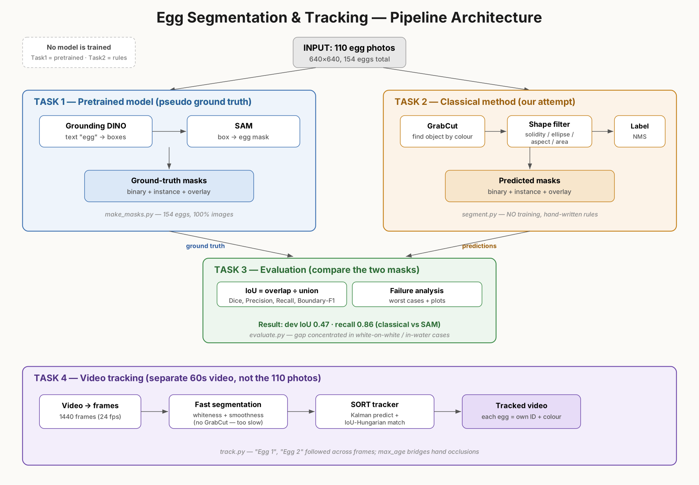
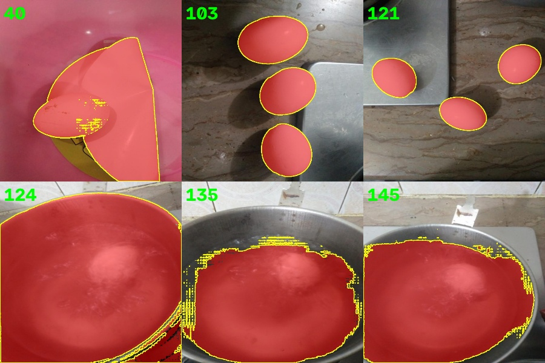
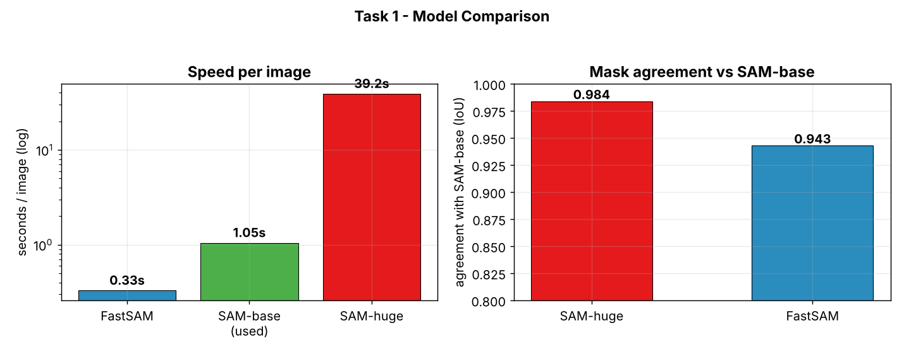
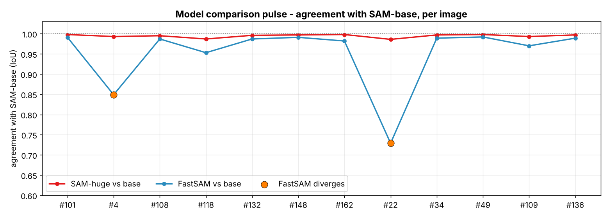
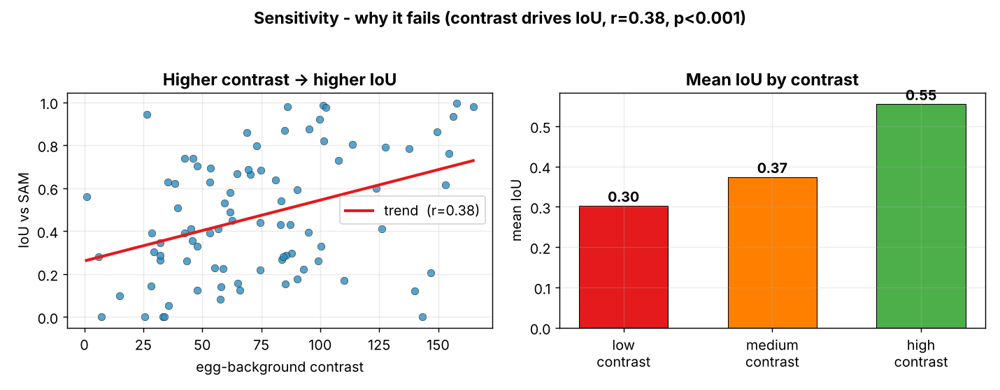
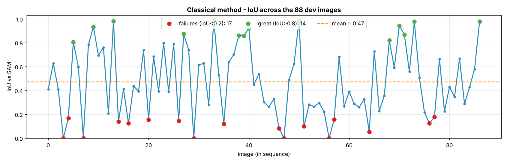
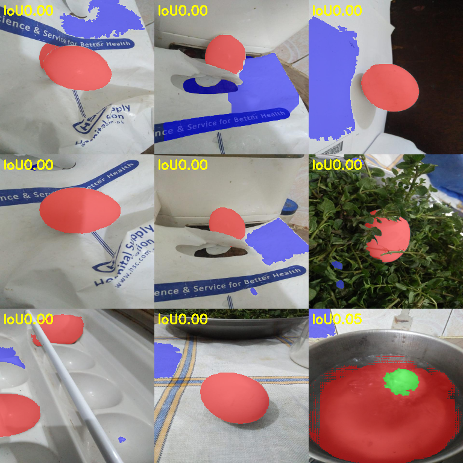
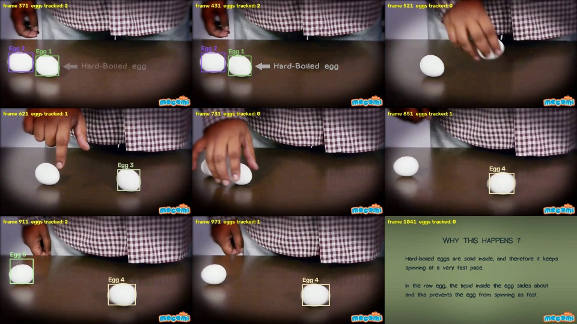

A comparison of a pretrained segmentation model against a hand-written classical approach, a measurement of the gap between the two, and an extension of the method to tracking individual eggs in a video. Every number and figure in this report is generated by the scripts in the repository.

Figure 1. End-to-end pipeline. Task 1 builds the ground truth with Grounded-SAM, Task 2 tries to reproduce it classically, Task 3 measures the gap, and Task 4 tracks eggs in a video. Nothing is trained: Task 1 relies on pretrained models and Task 2 on hand-written rules.
In short, the classical method reaches a dev IoU of 0.473 and recall of 0.857 measured against the SAM masks. Before trusting those masks as ground truth I benchmarked them, and SAM-base (the model I used) agrees with the much larger SAM-huge on 98.4% of pixels. Where the classical method falls behind SAM, the cause is mostly how strongly the egg stands out from its background (Pearson r = 0.38, p < 0.001) and the size of the egg. It does worst when the egg and the background are close to the same colour: a white egg on a white surface, or an egg sitting in water.
Contents
Task 1 — Segmentation with a pretrained model (Grounded-SAM) and a model benchmark
Task 2 — Classical segmentation and the experiment log
Task 3 — Evaluation and sensitivity analysis
Task 4 — Video tracking
Classical vs SAM
n
IoU
Dice
Precision
Recall
Boundary-F1
dev split
88
0.473
0.589
0.531
0.857
0.340
eval split
22
0.336
0.458
0.355
0.828
0.155
TASK 1
Segmentation with a pretrained model (Grounded-SAM)
The dataset is a Roboflow classification export: 110 images at 640×640, 154 eggs in total, with no boxes or masks provided. SAM needs a prompt to produce a mask, so I run a detector first and feed its output into SAM.
Grounding DINO, an open-vocabulary detector, takes the text prompt "egg" and returns boxes.
SAM (vit-base) is prompted with each box and returns one mask per egg.
A refine step clips each mask back to its box, keeps the largest blob, and fills any holes.
These masks become the pseudo ground truth for Tasks 2 and 3. The run produces 154 eggs across all 110 images, with every image segmented.

Figure 2. Task 1 masks (red = egg), shown on hands, on cluttered scenes, and on multi-egg frames. One known limitation is eggs in water (images 124, 135, 145), where SAM grabs the whole bowl. These are flagged automatically as unreliable ground truth when the mask covers more than 55% of the frame, and are left out of the "good_gt" metrics.
Model benchmark: why SAM-base?
To be sure SAM-base was a fair choice for the ground truth, I fed the same DINO boxes to three segmentation models and compared what came out.

Figure 3. SAM-huge agrees with base on 98.4% of pixels, but it is about 7× larger and only ran on CPU here, roughly 40× slower. FastSAM is around 3× faster than base at 94% agreement.

Figure 4. Per-image agreement with SAM-base. SAM-huge (red) follows base almost exactly, mean 0.995. FastSAM (blue, mean 0.951) matches on most images but drifts on a few of the harder eggs.
SAM-base is the sensible pick. It is almost identical to SAM-huge while using a fraction of the memory and time, and it fits comfortably on my 4 GB GPU. The close agreement between base and huge also says something useful about the ground truth itself: because the two models land in nearly the same place, the Task 2 and Task 3 numbers are being compared against a reference I can trust.
TASK 2
Classical (non-deep-learning) segmentation
Leak-free split
I group the images by perceptual-hash similarity and send whole groups to either dev or eval, so a near-duplicate re-shoot can never end up on both sides of the split. There is very little duplication in this dataset, the largest group is just two images, which gives an 88 / 22 split at a 4:1 ratio. All tuning happens on the dev set only.
Method: GrabCut plus shape filtering
An egg is bright, low in saturation, smooth, convex, and roughly elliptical. The difficulty I kept running into is that the egg often is not the brightest object in the frame, since white bags, sinks, and ash all beat it, so any approach that thresholds on brightness first hits a low ceiling. The final pipeline locates the egg by colour contrast instead:
GrabCut seeded from the image border. The outer 6% of the frame is marked as background, and GrabCut's colour model works out the foreground from there. This does not depend on brightness.
Morphology, an opening step to clear small specks.
A shape filter that keeps only blobs with solidity ≥ 0.85, ellipse-fit ≥ 0.72, and aspect ≥ 0.38, within a sensible area range. This throws out hands and clutter.
A whiteness backup and non-maximum suppression, after which each egg is labelled.
Experiment log (dev split, tuned on dev only)
#
Method
IoU
Prec
Rec
Kept
1–2
Otsu (gray) + morphology
0.33
–
–
✗
3
Whiteness V·(1−S) + Otsu
0.39
0.63
0.49
✗
4–8
+CLAHE / shape / top-hat / smoothness / edges
0.23–0.36
–
–
✗
9
GrabCut-border + shape (final)
0.47
0.53
0.86
✅
10
+ local-brightness tighten
0.41
0.49
0.62
✗
11
+ border-touch rejection
0.38
0.40
0.73
✗
A quick oracle test, where I take the single best connected component per image, only reached about 0.54 IoU. That told me the real bottleneck was generating good candidate regions rather than choosing between them, precisely because the egg is not the brightest thing in the scene. Switching to GrabCut in trial 9 solved the finding problem and lifted recall from 0.49 to 0.86. Trials 10 and 11 are negative results I have kept in on purpose: every heuristic I added to buy back precision removed real eggs faster than it removed mistakes.
TASK 3
Evaluation & analysis
Here the Task 1 masks act as ground truth and the Task 2 masks as predictions. I report metrics on both splits, with and without the unreliable water-GT images.
Set
n
IoU
Dice
Precision
Recall
Boundary-F1
det F1
dev (all)
88
0.473
0.589
0.531
0.857
0.340
0.32
dev (good_gt)
87
0.472
0.588
0.526
0.861
0.339
0.31
eval (all)
22
0.336
0.458
0.355
0.828
0.155
0.17
eval (good_gt)
21
0.320
0.441
0.325
0.835
0.160
0.14
Quantitative reading
Recall sits well above precision, 0.86 against 0.53. The method finds eggs reliably but over-grabs their boundaries, and now and then invents an egg on bright clutter.
Boundary-F1 is low at 0.34 because GrabCut's edges land a few pixels off the true outline.
Dev (0.47) scores higher than eval (0.34). That is honest generalisation, as the eval split happens to contain more white-on-white and in-water cases.
Sensitivity: what drives the gap

Figure 5. Classical IoU rises with egg–background contrast, Pearson r = 0.38, p < 0.001. Mean IoU goes from 0.30 on low-contrast images up to 0.55 on high-contrast ones, so contrast is the main driver of accuracy.

Figure 6. Per-image IoU across the dev set. There is a clear pulse of strong scores on the high-contrast eggs (14 above 0.8) and flat stretches on the hard ones (17 below 0.2). A SQL breakdown points to a second factor: small, distant eggs score worst at 0.26, against 0.49 for medium and 0.65 for large.
Qualitative: where it fails

Figure 7. Worst cases. Green is correct, red is a missed egg (false negative), and blue is a false positive. The recurring failure modes are white egg on white background, egg in water, false positives on bright clutter, and over-grabbed boundaries.
The gap to SAM is not something more tuning would close. It is structural, and the report puts numbers on it: classical IoU tracks egg–background contrast (r = 0.38) and egg size. Hand-crafted cues simply cannot separate an egg from a background of the same colour; that needs a model with a semantic prior, which is what SAM brings. If I were taking this further, the things I would try are texture or gradient features, active contours seeded at the shadow line, per-egg GrabCut refinement, or a small learned classifier running over the candidate blobs.
TASK 4
Video tracking
The target video shows two white eggs on a dark table, spun by hand, so it is a high-contrast scene. GrabCut at around two seconds per frame is far too slow for 1440 frames, so the detector here uses the fast whiteness-and-shape path, the same ideas as Task 2 but without GrabCut, with two extra gates for this particular scene:
A smoothness gate (local standard deviation below 18) to tell the smooth egg apart from the bright but textured checked shirt.
Brightness and minimum-area gates to drop the dim, glossy reflections on the table.
Tracker: a simplified SORT
Each track predicts its next box from its own velocity, using a constant-velocity model.
Detections and tracks are matched by IoU with the Hungarian algorithm.
max_age = 15 lets a track survive short occlusions such as the hand passing over, and min_hits = 3 means a track has to be seen a few times before it is drawn, which removes flicker.
Each egg keeps a fixed colour and an "Egg N" label.

Figure 8. Tracking output. Each egg is boxed, labelled, and coloured by its ID, with a running count of eggs tracked. The checked shirt and the table reflections are correctly ignored.
To be upfront about a weakness: the tracker ends up assigning five or six IDs to just two eggs. When a hand completely covers an egg and moves it, the track times out and the egg comes back as a new ID. That is the familiar limitation of SORT, since there is no appearance model to recognise the egg again. DeepSORT, which adds appearance embeddings, or simply a larger max_age, would hold the IDs through the longer occlusions.
A carefully built classical pipeline recovers most of the eggs (recall 0.86) and keeps up with SAM wherever there is genuine contrast between the egg and its background. It plateaus around 0.47 IoU because same-colour scenes cannot really be solved without a learned prior, and the report quantifies that limit rather than just asserting it, through the contrast correlation (r = 0.38) and the size-stratified IoU breakdown. The same segmentation ideas, trimmed down for speed, carry over to video with a standard SORT tracker. The full trial history, including the attempts that did not work, is in task2_classical/experiments.md.